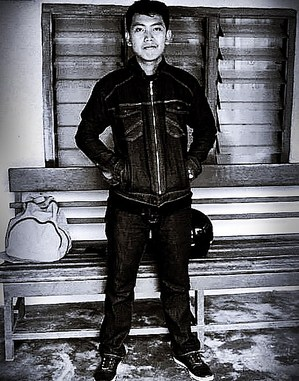

Tim Kami

Satriadi Jaya Sinaga
Junior Web Programming
Saya sangat antusias dengan program DTS20 OA. Saya mendapatkan pengalaman baru, pemahaman baru, kerjasama tim dan tentunya banyak kenalan baru. Bravo!
GitHubDiskominfo Provsu

Dinas Komunikasi dan Informatika Provinsi Sumatera Utara
Kantor Dinas Komunikasi dan Informatika Provinsi Sumatera Utara berlokasi di Jalan H.M. Said No.27, Medan. Untuk Info selengkapnya bisa diakses pada tombol dibawah
Akses HalamanProgram hebat ini diselenggarakan oleh :